Bilder, Objekte, Collagen. Und Romane.
Geboren 1952 in Montreal. Studium der Mathematik und Philosophie.

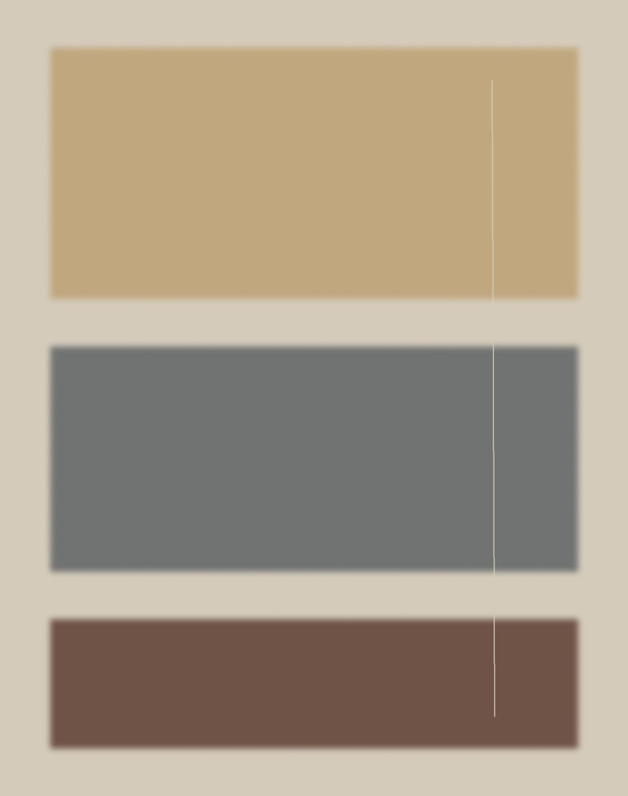

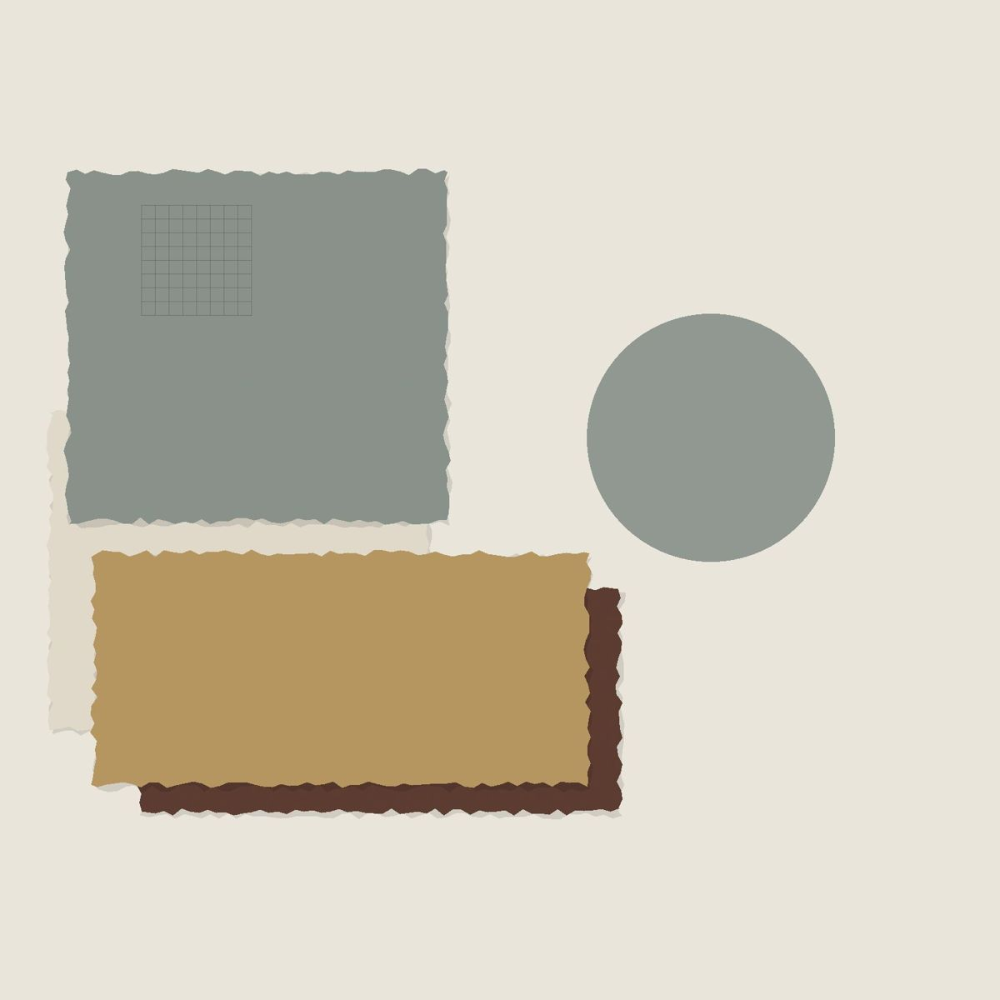

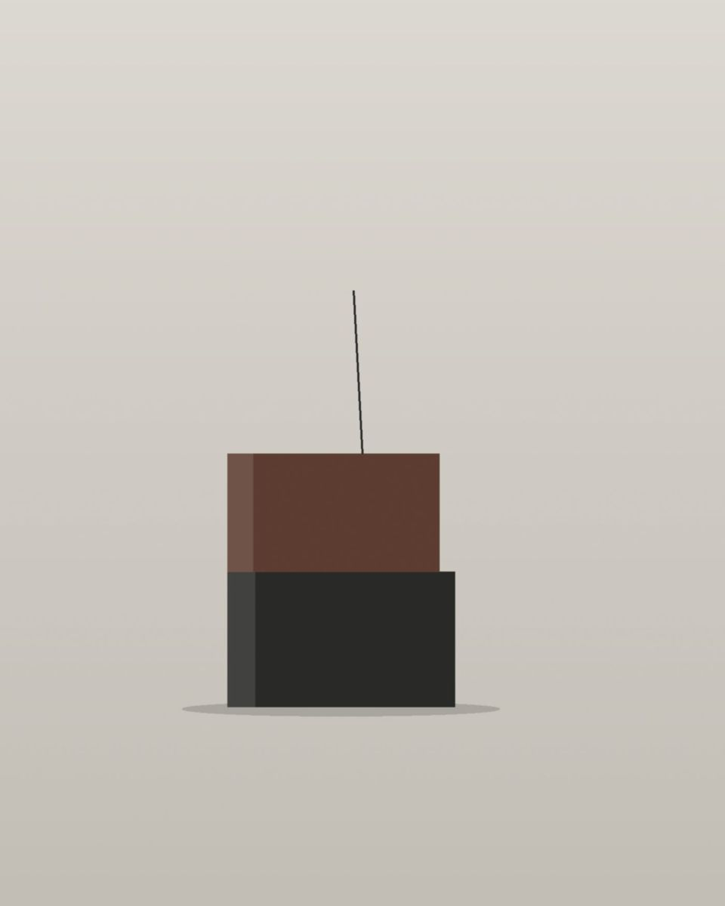

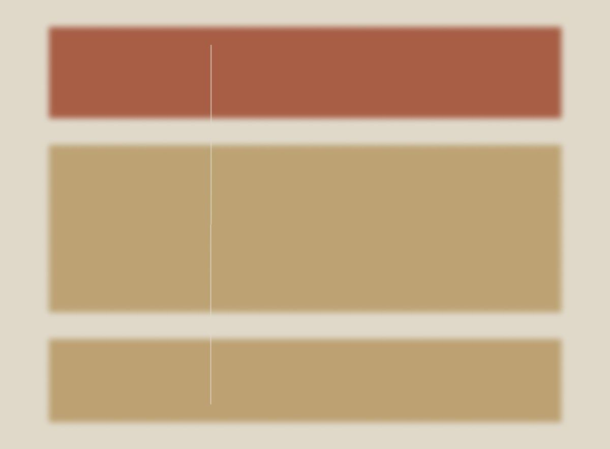

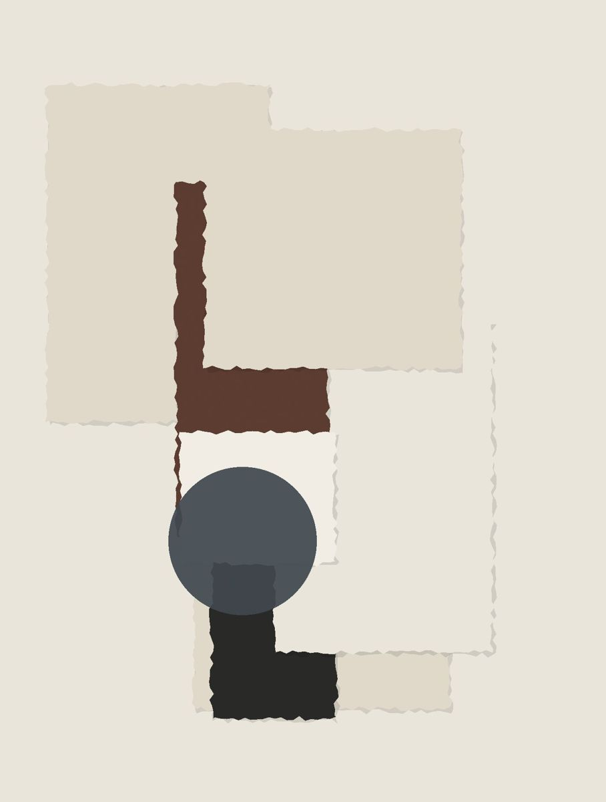

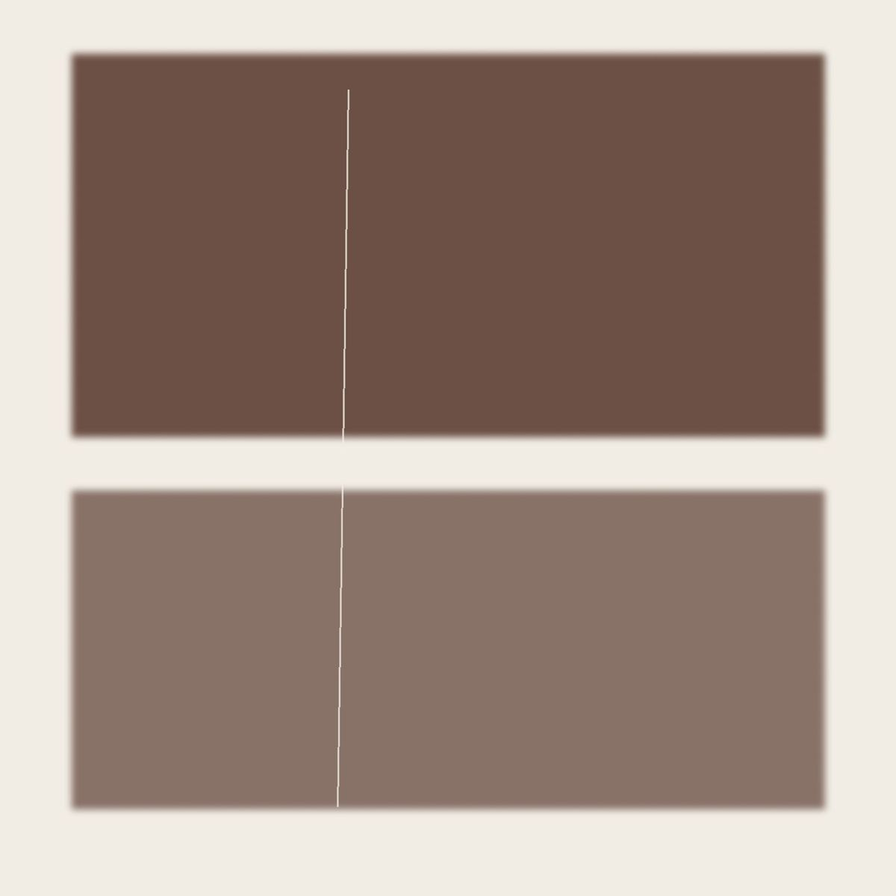

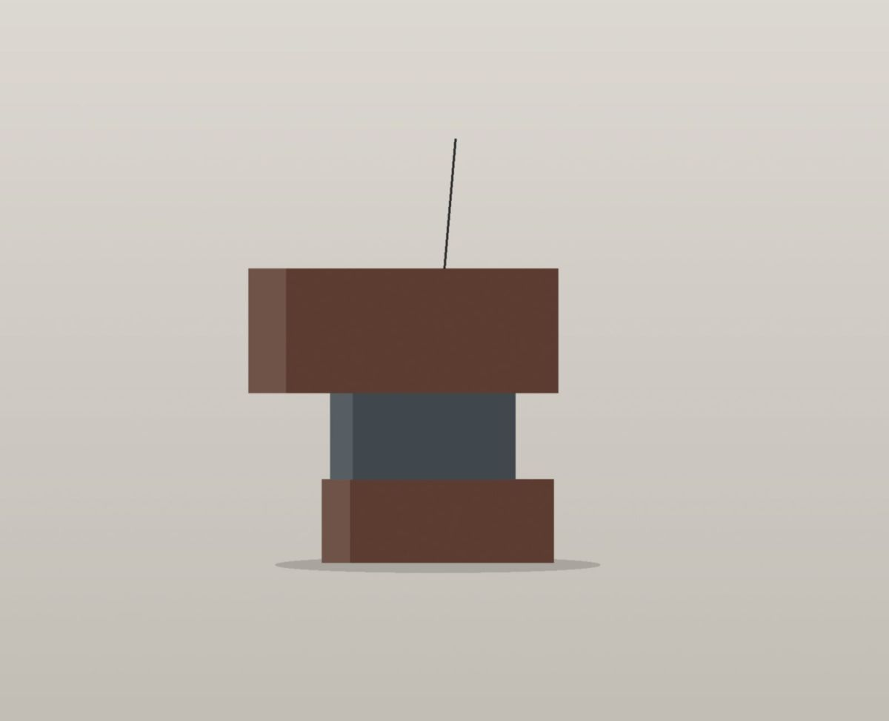

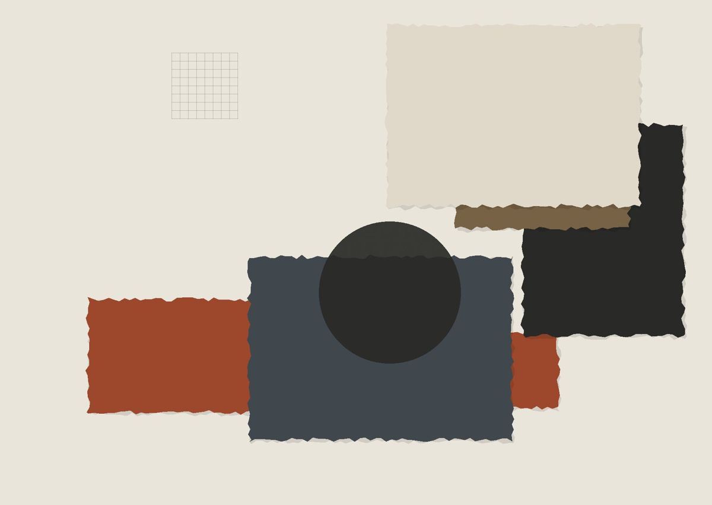

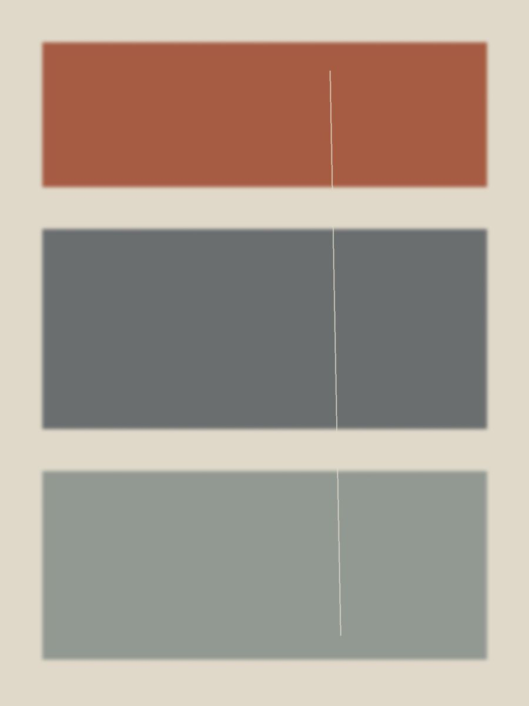

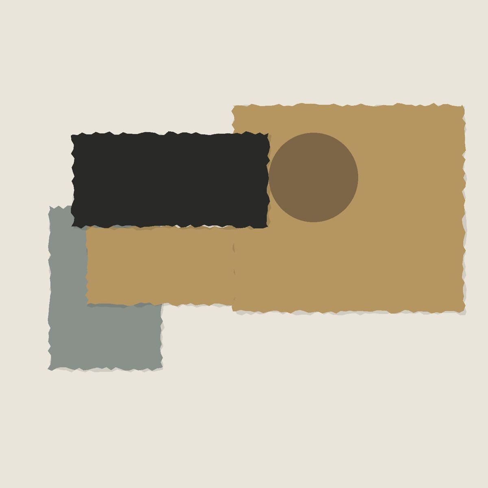

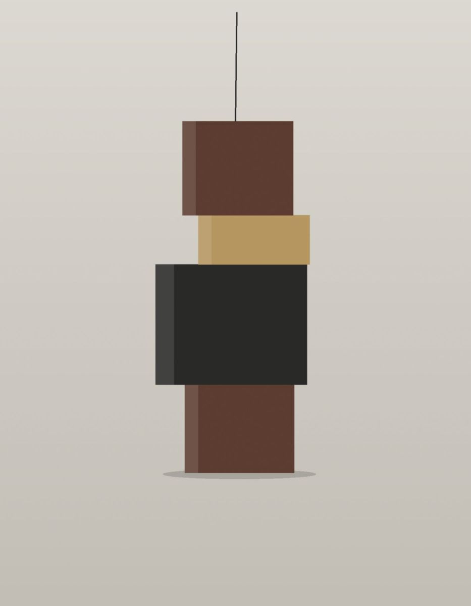

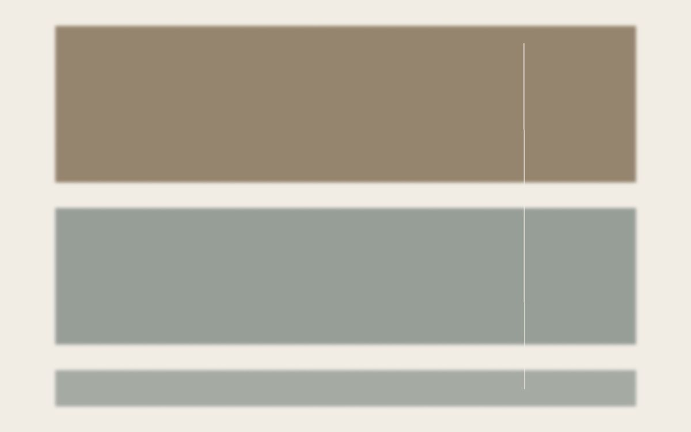
Alle Werke, nach Art geordnet, stehen im Verzeichnis.
Zum VerzeichnisVerzeichnis
Bücher
Drei Romane, erschienen bei der Ganymed Edition in Hannover.
-
Tage der Tauben
Über Nacht steht ein weißer Kubus in Hannover, und die Stadt gerät aus dem Takt.
-
Letzter Reigen
Achtzehn Menschen begegnen sich paarweise, einer gibt den Reigen an den nächsten weiter. Die Tauben sind immer dabei.
-
Vulkane, Paradiese und andere Zumutungen
Dr. Rochus Moje will in Chicago eine Firma kaufen. Ein Vulkan auf Island und ein Schiff auf den Azoren schicken ihn auf einen anderen Heimweg.
Zur Person
Mit Flaubert und Heidegger: Die Person trägt wenig zu den Bildern und Büchern bei. Sie stehen für sich.
- 1952
- geboren in Montreal
- Studium
- Mathematik und Philosophie
- Werk
- Bilder, Objekte, Collagen
- Romane
- Tage der Tauben (2018, mit Martin Murch), Letzter Reigen (2020), Vulkane, Paradiese und andere Zumutungen (2024), alle bei der Ganymed Edition
Kontakt
Anfragen zu Werken und Ausstellungen bitte per E-Mail.
kontakt@jostmerscher.deDie Bücher gibt es im Buchhandel und direkt bei der Ganymed Edition.